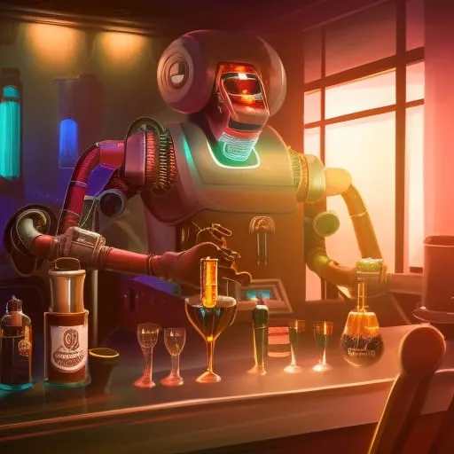

"Niraxus: A New Hope"
Chapter 6: "A Drink with the Captain"
After breaking up the fight in the rec room, Sergeant Taylor made his way back to his sleeping quarters. As he passed through the bar area, he spotted Captain Patel sitting alone at the bar. She looked up and greeted him, inviting him to join her for a drink. "Taylor, how about you join me for a drink?" Captain Patel said. "I'd love to Captain, thank you," Sgt Taylor replied as he took a seat next to her. A robot bartender, named "Zoltron", greeted him and asked what he would like to drink. Sgt Taylor ordered the same as the Captain, a glass of Jaltorian whiskey. "This Jaltorian whiskey is something special, isn't it Taylor?" the Captain said, holding up her glass. "Yes, it is. I don't think I've ever had anything quite like it," Sgt Taylor replied, taking a sip. As they talked, the Captain noticed that Sgt Taylor seemed to be on edge. "Is everything alright, Taylor? You seem a bit nervous," the Captain asked. Sgt Taylor hesitated for a moment before replying, "The fight earlier, it just reminded me of some bad things that happened in the past." The Captain could see that he was reluctant to talk about it, but after a few more drinks and some gentle persuasion, he opened up. "It was during the war with the Kaltor aliens," he began. "The war started because of a territorial dispute over a valuable resource found in a nearby system. I was part of a battle on their home planet of Kaltor Prime. It was ten years ago, on July 12th, 2290." The Captain listened intently as Sgt Taylor described the battle in detail. He spoke of the intense fighting that had taken place on the planet, with both sides using advanced technology and weapons. The humans used conventional weapons like guns and missiles, while the Kaltor aliens had energy weapons, advanced shields, and faster-than-light travel capabilities. The most powerful weapon that the Kaltor had was a massive energy cannon that was capable of destroying entire cities. "It was brutal," Sgt Taylor said, his voice heavy with emotion. "We were outnumbered and outgunned. But we fought tooth and nail, determined to take the planet." "We finally managed to breach the Kaltor's main base and destroy their primary weapon, but not without heavy losses. I lost a lot of friends that day." The Captain placed a comforting hand on his shoulder. "I'm so sorry, Taylor. That must have been a tough time for you." Zoltron listened in silence, his robotic eyes fixed on the Sergeant as he spoke. "That was a difficult war , but it ultimately led to a treaty between humanity and the Kaltor civilization. It was a hard-won victory, but it was worth it in the end." As they talked, the Captain and Sgt Taylor finished their glasses of Jaltorian whiskey and ordered another round. They continued to discuss the war and the different alien civilizations they had encountered during their journey. The Captain listened intently, eager to learn more about the experiences of her crew. As the night went on, they laughed, shared stories and toasted to their victories. The whiskey and the company helped to ease Sgt Taylor's nerves and he felt a sense of camaraderie with the Captain and Zoltron that he hadn't felt in a long time. As they said their goodbyes and headed back to their respective quarters, Sgt Taylor couldn't help but feel grateful for the chance encounter at the bar. It had been a long time since he had opened up about the war and it felt good to talk about it with someone who understood. He knew that the mission ahead would be tough, but with the Captain and his crew by his side, he felt confident that they would succeed. Sgt. Michael Taylor enters his sleeping quarters, feeling the weight of the whiskey he had consumed earlier. He scans his key card, and the door slides open. He takes off his clothes and collapses onto his bed, closing his eyes. As the lights turn on, he hears a voice. "Sgt. Taylor," it says, and he opens his eyes to see Corporal Rodriguez sitting on the edge of his bed. "Corporal, what are you doing here?" he asks, his words slurred. She smiles at him. "I couldn't sleep," she says, "I thought maybe you could keep me company." He looks at her, taking in her dark hair and latino features. She is beautiful, he thinks. "I don't know," he says, "I'm pretty drunk." She leans in closer, her voice dropping to a whisper. "I don't mind," she says. He feels a flutter in his stomach, and before he can think, he's nodding. "Okay," he says, and she grins. They spend the night talking and laughing, and eventually they fall asleep in each other's arms.